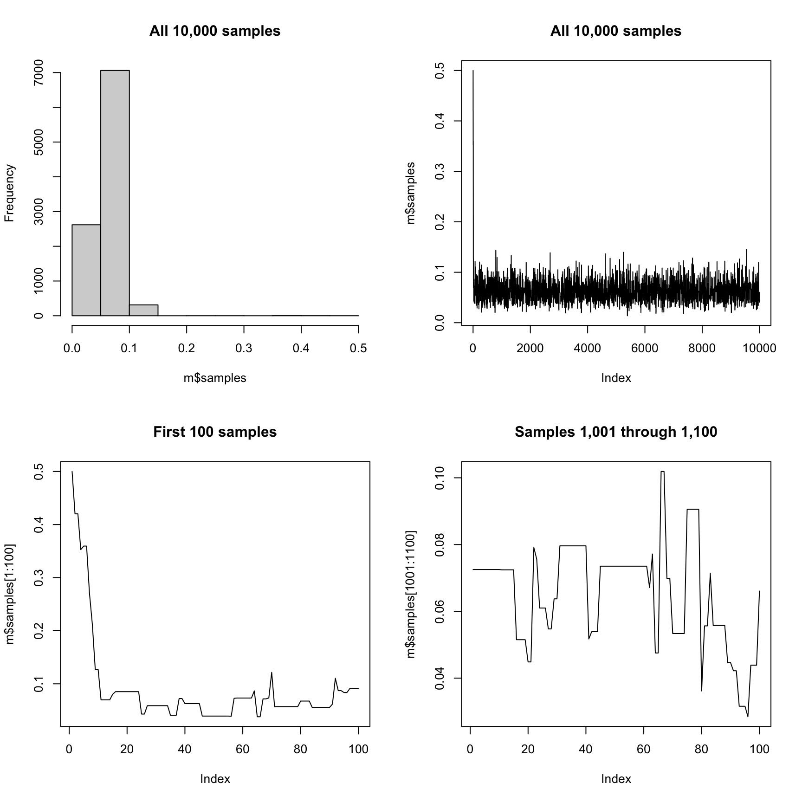
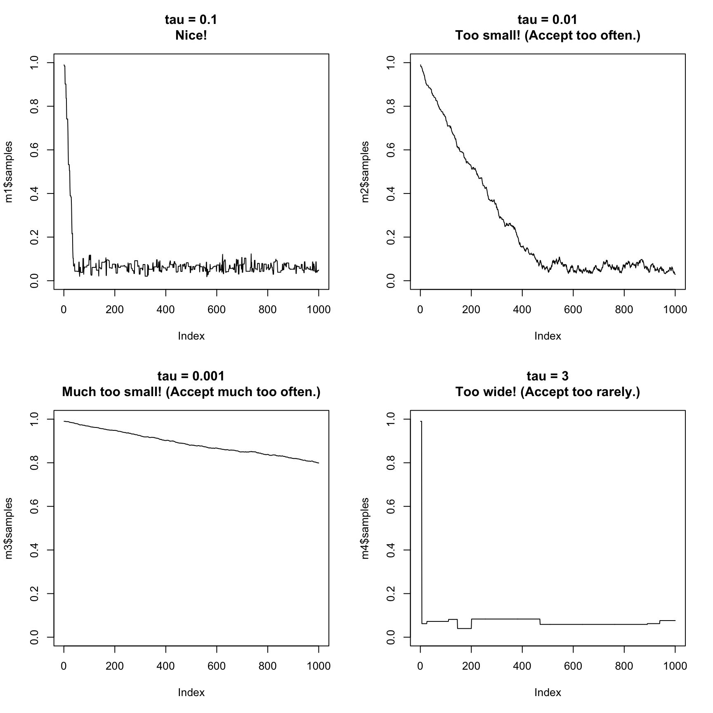
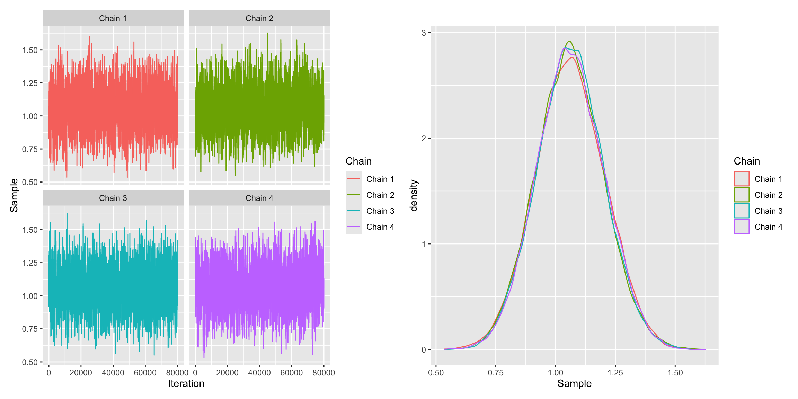

metrop <- function(logf, theta_start, S = 10000, tau = 0.1, ...) {
# initialize matrix of samples with starting values
k <- length(theta_start)
samples <- matrix(NA_real_, nrow = S, ncol = k)
samples[1, ] <- theta_start
# proceed with algorithm
for (s in 2:S) {
# extract current location
current <- samples[s - 1, ]
# generate symmetric random-walk proposal
proposed_move <- runif(k, -tau, tau)
proposal <- current + proposed_move
# acceptance step
delta <- logf(proposal, ...) - logf(current, ...)
if (delta > 0) {
accept <- TRUE
} else {
accept <- (log(runif(1)) <= delta)
}
# update samples
if (accept) {
samples[s, ] <- proposal
} else {
samples[s, ] <- current
}
}
samples
}20 Metropolis Algorithm
Previously, we used the rejection algorithm to build intuition about sampling from an unnormalized posterior. We showed that it can be easier to sample from a distribution than to work with closed-form results. The rejection algorithm is simple and intuitive, but requires (1) finding a suitable envelope constant and (2) rejecting many samples in realistic problems (e.g., logistic regression).
We can improve the rejection algorithm by making adaptive proposals. Many algorithms—including Stan!—use addaptive proposals. The Metropolis algorithm is one example. The Metropolis algorithm belongs to a larger class of Markov chain Monte Carlo (MCMC) algorithms,1 which includes Metropolis-Hastings, Gibbs sampling, and the Hamiltonian Monte Carlo algorithm used by Stan.
1 MCMC refers to a family of algorithms for generating samples from a target probability distribution by constructing a Markov chain whose stationary distribution is that target. Over many iterations, the samples produced by the chain approximate independent draws from the posterior distribution, allowing us to estimate quantities such as means, variances, and credible intervals even when the posterior cannot be computed analytically.
20.1 Algorithm: Metropolis
Inputs:
- The unnormalized log-posterior \(\log f(\theta\mid y)\).
- Desired number of iterations \(S\). Note: the samples are dependent so choose large \(S\) (e.g., \(S = 20,000\)), perhaps very large (e.g., \(S = 200,000\)).
- Tuning parameter \(\tau\), which controls the width of the uniform proposal density.
Algorithm:
- Initialize: Choose an initial \(\theta^{(1)}\). Set \(s=1\).
- Repeat until \(s=S\):
- Propose: Draw \(z\) from a uniform distribution from \([\theta^{(s)} - \tau]\) to \([\theta^{(s)} + \tau]\).
- Compute log-acceptance: \(\Delta = \log f(z)-\log f \big(\theta^{(s)}\big)\)
- Accept/reject: Draw \(u \sim \text{Uniform}(0,1)\). Accept iff \(\log u \le \Delta\). If accept, set \(\theta^{(s+1)}=z\); otherwise \(\theta^{(s+1)}=\theta^{(s)}\).2
- Iterate: \(s\leftarrow s+1\).
2 Importantly, this accepts with probability equal to \(\frac{f(\text{proposal})}{f(\text{current})\) if the ratio is between zero and one and always if the ratio is greater than one. This step is similar to the rejection algorithm, except we keep the current value in the rejected values place in Metropolis.
Output: A Markov chain \(\{\theta^{(s)}\}_{s=1}^S\) with stationary distribution \(f(\theta\mid y)\). Consecutive draws are not independent; in practice, discard a burn-in and tune \(\tau\) to maintain a reasonable acceptance rate (perhaps 0.2-0.5, problem-dependent).
We can write this algorithm in R.
20.1.1 Minimal version
The version below has only the critical pieces.
20.1.2 Some features added
The version below adds a few features, like a helpful message and an optional progress bar.
metrop <- function(logf, theta_start, S = 10000, tau = 0.1, progress_bar = FALSE, ...) {
# record start time
start_time <- Sys.time()
# initialize matrix of samples with starting values
k <- length(theta_start)
samples <- matrix(NA_real_, nrow = S, ncol = k)
samples[1, ] <- theta_start
n_accepted <- 0
# optionally initialize progress bar
if (progress_bar) {
pb <- txtProgressBar(min = 0, max = S, style = 3)
}
# proceed with algorithm
for (s in 2:S) {
# extract current location
current <- samples[s - 1, ]
# generate symmetric random-walk proposal
proposed_move <- runif(k, -tau, tau)
proposal <- current + proposed_move
# acceptance step
delta <- logf(proposal, ...) - logf(current, ...)
if (delta > 0) {
accept <- TRUE
} else {
accept <- (log(runif(1)) <= delta)
}
# update samples
if (accept) {
samples[s, ] <- proposal
n_accepted <- n_accepted + 1
} else {
samples[s, ] <- current
}
# update progress bar occasionally
if (progress_bar && (s %% (S / 100) == 0 || s == S)) {
setTxtProgressBar(pb, s)
}
}
# close progress bar if used
if (progress_bar) close(pb)
# print summary report
message(
paste0(
"💪 Successfully generated ", scales::comma(S), " dependent samples! 🎉\n\n",
"✅ Accepted moves: ", scales::comma(n_accepted), "\n",
"﹪ Acceptance rate: ", scales::percent(n_accepted / (S - 1), accuracy = 1),
" (tune tau so that acceptance rate is about 20%-50%).\n",
"⏰ Total time: ", prettyunits::pretty_dt(Sys.time() - start_time), "\n",
"🧠 Reminder: if a proposal is not accepted, the previous sample is reused. This makes the samples depending on starting values and each other. Discard initial samples, use R-hat to assess convergence, and use ESS to assess effective sample size."
)
)
list(
prop_accepted = n_accepted / (S - 1),
samples = samples
)
}20.2 Toothpaste Cap
This example has a known analytical solution. For \(k=8\) and \(N=150\), the posterior is \(\text{beta}(11,165)\).
# create log-target for Beta posterior; -Inf outside (0,1)
logf <- function(p) {
ifelse(p <= 0 | p >= 1,
-Inf,
dbeta(p, 11, 165, log = TRUE))
}
# run algorithm starting in the middle of (0,1)
m <- metrop(
logf, # log-target
theta_start = 0.5
)We can compare the analytical posterior mean with the simulation.
# closed-form posterior mean
11 / (11 + 165)[1] 0.0625# simulations (samples is S x k; here k = 1)
mean(m$samples)[1] 0.06293733We can plot the histogram and time series of the samples. The chain explores the posterior nicely overall; zooming into the first 100 iterations shows the initial transient; later windows show dependence across draws.
par(mfrow = c(2, 2)) # arrange figures
hist(m$samples, main = "All 10,000 samples")
plot(m$samples, type = "l", main = "All 10,000 samples")
plot(m$samples[1:100], type = "l", main = "First 100 samples")
plot(m$samples[1001:1100], type = "l", main = "Samples 1,001 through 1,100")
There are two things worth noting.
- The samples are not independent. Many consecutive draws are identical (rejections) or move only a little; the chain explores the target slowly.
- It takes a few iterations for the chain to reach the high-probability region (burn-in). Starting at \(\pi=0.5\) is far from the posterior mass; it takes roughly a few dozen iterations to reach \(\approx 0.1\).
20.2.1 Burn-in
The MCMC samples are heavily dependent on the starting values, so discard early samples that depend strongly on the starting value (the “burn-in”). Discarding the first 10% to 50% of the samples is typical.
Rather than use all the samples (including our chosen starting value) to compute the posterior mean, let’s use only the last 5,000 samples.
# simulations, keep only samples 5,001 through 10,000 (discard first half)
mean(m$samples[5001:10000, 1])[1] 0.0624880520.2.2 \(\hat{R}\) or R-hat
But how do we know how long to run our algorithms? How do we know if the samples have converged to the target distribution. Until recently, this was a difficult problem. Now we simply quickly check that R-hat is less than 1.01.
To compute R-hat, run several chains from overdispersed starting values. It is importantly that these be high and low relevative to the target distribution. If chains have converged, within- and between-chain variation align and \(\hat{R}\approx 1\). The literature and practices on R-hat are evolving rapidly; see ?posterior::rhat for the latest references.
For example, we can run the algorithm for 25 iterations and see that R-hat is much larger than 1.01.
# run algorithm four times, making four "chains"
m1 <- metrop(logf, theta_start = 0.01, S = 25)
m2 <- metrop(logf, theta_start = 0.25, S = 25)
m3 <- metrop(logf, theta_start = 0.75, S = 25)
m4 <- metrop(logf, theta_start = 0.99, S = 25)
# a matrix of chains for first (and only) dimension
matrix_of_chains <- cbind(
m1$samples[, 1],
m2$samples[, 1],
m3$samples[, 1],
m4$samples[, 1]
)
# compute r-hat using the rhat() function in {posterior}
posterior::rhat(matrix_of_chains)[1] 2.576923If we increase S to a larger value and discard the intial samples, then R-hat falls below 1.01.
# run algorithm four times, making four "chains"
m1 <- metrop(logf, theta_start = 0.01, S = 25000)
m2 <- metrop(logf, theta_start = 0.25, S = 25000)
m3 <- metrop(logf, theta_start = 0.75, S = 25000)
m4 <- metrop(logf, theta_start = 0.99, S = 25000)
# a matrix of chains for first (and only) dimension
matrix_of_chains <- cbind(
m1$samples[10001:25000, 1],
m2$samples[10001:25000, 1],
m3$samples[10001:25000, 1],
m4$samples[10001:25000, 1]
)
# compute r-hat using the rhat() function in {posterior}
posterior::rhat(matrix_of_chains)[1] 1.00069620.2.3 Parallel
Multiple chains are naturally parallelizable. In fact, these are called “embarrassingly parallel,” because the chains are run entirely independently—nothing from the first chain is needed for the second, and so on.
# count physical cores (leave some free)
parallel::detectCores(logical = FALSE)[1] 12Here is how we might use the {foreach} package to run the chains in parallel. This isn’t important here, because each chain runs very quickly. However, it is important in practice, and modern packages make it easy.
# load packages
library(foreach)
library(doParallel)
# overdispersed starting values
starting_values <- seq(0.05, 0.95, length.out = 10)
# register parallel backend
cl <- makeCluster(10)
registerDoParallel(cl)
# run algorithm 10 times in paralle., combine samples with cbind()
matrix_of_chains <- foreach(s = starting_values, .combine = cbind) %dopar% {
m <- metrop(
logf,
theta_start = s,
S = 25
)
m$samples
}
# stop the parallel backend
stopCluster(cl)
# columns are chains; rows are samples
head(matrix_of_chains) [,1] [,2] [,3] [,4] [,5] [,6] [,7] [,8] [,9] [,10]
[1,] 0.0500 0.1500 0.250 0.350 0.450 0.550 0.650 0.75 0.850 0.950
[2,] 0.0500 0.1076 0.250 0.253 0.450 0.499 0.564 0.75 0.850 0.946
[3,] 0.0746 0.1076 0.200 0.168 0.425 0.465 0.494 0.75 0.768 0.900
[4,] 0.0746 0.1076 0.200 0.168 0.327 0.465 0.431 0.75 0.768 0.810
[5,] 0.0746 0.0922 0.178 0.161 0.327 0.465 0.431 0.75 0.768 0.778
[6,] 0.0746 0.0508 0.178 0.176 0.327 0.394 0.431 0.75 0.768 0.752# compute R-hat using {posterior}
posterior::rhat(matrix_of_chains)[1] 2.5The figure below shows the 25 samples from each of the 10 chains. Notice the strong dependence on starting values! In practice, we’d need to generate many more samples, discard the first samples, and compute the R-hat to demonstrate convergence.
Code
colnames(matrix_of_chains) <- paste("Chain", 1:ncol(matrix_of_chains))
gg_df <- matrix_of_chains |>
as_tibble() |>
mutate(Iteration = 1:n()) |>
pivot_longer(cols = `Chain 1`:`Chain 10`, names_to = "Chain", values_to = "Sample") |>
separate(Chain, into = c("tmp", "Chain Number"), remove = FALSE) |>
mutate(`Chain Number` = as.numeric(`Chain Number`),
Chain = reorder(Chain, `Chain Number`, ordered = TRUE))
ggplot(gg_df, aes(x = Iteration, y = Sample, color = Chain)) +
geom_line() +
theme_ipsum(base_family = "Source Sans 3") +
labs(title = "Samples generated by Metropolis algorithm",
subtitle = "10 separate chains")
20.2.4 ESS
Dependent Metropolis samples carry less information than the same number of independent samples. The Effective Sample Size (ESS) summarizes the amount of information in our dependent samples—“our dependent samples are like ______ independent samples.” The literature and practices on ESS are evolving rapidly; see ?posterior::ess_bulk for the latest references.
dim(matrix_of_chains) # 15,000 x 4 = 60,000 samples[1] 25 10# are like
posterior::ess_bulk(matrix_of_chains) # ESS for mean-like estimands[1] 17.60899posterior::ess_tail(matrix_of_chains) # ESS for tail estimands[1] 22.9297120.2.5 Tuning for intuition
The tuning parameter matters a lot. I’ve chosen a smart default for many problems, but the value of tau should be something like the SD of the posterior. Below, we can see how “bad” values of tau work.
# varying the tuning parameter tau
m1 <- metrop(logf, theta_start = 0.99, S = 1000, tau = 0.1)
m2 <- metrop(logf, theta_start = 0.99, S = 1000, tau = 0.01)
m3 <- metrop(logf, theta_start = 0.99, S = 1000, tau = 0.001)
m4 <- metrop(logf, theta_start = 0.99, S = 1000, tau = 3)
par(mfrow = c(2, 2))
plot(m1$samples, type = "l", main = "tau = 0.1\nNice!", ylim = c(0, 1))
plot(m2$samples, type = "l", main = "tau = 0.01\nToo small! (Accept too often.)", ylim = c(0, 1))
plot(m3$samples, type = "l", main = "tau = 0.001\nMuch too small! (Accept much too often.)", ylim = c(0, 1))
plot(m4$samples, type = "l", main = "tau = 3\nToo wide! (Accept too rarely.)", ylim = c(0, 1))
20.3 Sawtooth Prior
We can use the Metropolis algorithm for our “weird” sawtooth posterior. We’ll the log-posterior in this case.
# sawtooth log-prior (unnormalized): log of ((n_teeth*p) %% 1) on (0,1)
log_prior_saw <- function(p, n_teeth = 5) {
ifelse(p <= 0 | p >= 1,
-Inf,
log((n_teeth * p) %% 1))
}
# likelihood for 10 tosses w/ one success
log_lik <- function(p) {
ifelse(p <= 0 | p >= 1,
-Inf,
dbinom(1, size = 10, prob = p, log = TRUE))
}
# log-posterior
log_post <- function(p) log_lik(p) + log_prior_saw(p)
# run metropolis algorithm
m <- metrop(log_post, theta_start = 0.5)
# plot samples
par(mfrow = c(1, 2))
plot(m$samples, type = "l")
hist(m$samples, breaks = 100)
20.4 Logistic Regression
20.4.1 Data
Recall the logit model from a previous chapter. This time, let’s rescale the numeric variables to have mean of zero and SD of 0.5 This keeps coefficients on a similar scale, which helps us with the computation. For more on this rescaling strategy and it’s advantages, see Gelman (2008).
Gelman, Andrew. 2008. “Scaling Regression Inputs by Dividing by Two Standard Deviations.” Statistics in Medicine 27 (15): 2865–73. https://doi.org/10.1002/sim.3107.
# load only the turnout data frame
turnout <- ZeligData::turnout # see ?ZeligData::turnout for details
# fit logit model
rs <- function(x) { arm::rescale(x) } # make an alias to print nicely
# bug??? for some reason this fails with comparisons()
f <- vote ~ rs(age) + rs(educate) + rs(income) + race # rescaling so that coefs are similar makes everything nicer
# just have to hard-code the rescaled variables, which is not optimal
turnout <- turnout |>
mutate(across(age:income, rs, .names = "rs_{.col}")) |>
glimpse()Rows: 2,000
Columns: 8
$ race <fct> white, white, white, white, white, white, white, white, whi…
$ age <int> 60, 51, 24, 38, 25, 67, 40, 56, 32, 75, 46, 52, 22, 60, 24,…
$ educate <dbl> 14, 10, 12, 8, 12, 12, 12, 10, 12, 16, 15, 12, 12, 12, 14, …
$ income <dbl> 3.3458, 1.8561, 0.6304, 3.4183, 2.7852, 2.3866, 4.2857, 9.3…
$ vote <int> 1, 0, 0, 1, 1, 1, 0, 1, 1, 1, 1, 1, 0, 0, 1, 1, 1, 1, 1, 1,…
$ rs_age <dbl> 0.41969664, 0.16280941, -0.60785226, -0.20824991, -0.579309…
$ rs_educate <dbl> 0.286848797, -0.306657055, -0.009904129, -0.603409981, -0.0…
$ rs_income <dbl> -0.095661199, -0.359152251, -0.575948238, -0.082837743, -0.…f <- vote ~ rs_age + rs_educate + rs_income + race
fit <- glm(f, family = binomial, data = turnout)
# print estimates
arm::display(fit, digits = 4)glm(formula = f, family = binomial, data = turnout)
coef.est coef.se
(Intercept) 1.0578 0.1396
rs_age 0.9934 0.1212
rs_educate 1.1837 0.1370
rs_income 1.0013 0.1535
racewhite 0.2508 0.1465
---
n = 2000, k = 5
residual deviance = 2024.0, null deviance = 2266.7 (difference = 242.8)20.4.2 Log-Posterior
Now define the unnormalized log-posterior. For this example, we imagine an improper, constant prior.
# make X and y
mf <- model.frame(f, data = turnout)
X <- model.matrix(f, data = mf)
y <- model.response(mf)
# ❌ correct, but unstable, log unnormalized posterior
log_posterior <- function(beta, y, X) {
linpred <- X %*% beta
p <- plogis(linpred)
sum(dbinom(y, size = 1, prob = plogis(linpred), log = TRUE)) # occassionally makes NaN, b/c 0*Inf
}
# ✅ same unnormalized log posterior, but avoid 0*Inf instability
log_posterior <- function(beta, y, X) {
linpred <- drop(X %*% beta)
log1pexp <- ifelse(linpred > 0, linpred + log1p(exp(-linpred)), log1p(exp(linpred)))
sum(y * linpred - log1pexp)
}20.4.3 Running the Algorithm
After some experimenting, I found that I 100,000 iterations with a 20,000 iteration burn-in works well.
# set seed
set.seed(1234)
# sample with metropolis
S <- 100000
m1 <- metrop(log_posterior, S = S, tau = 0.1, theta_start = rep(-2, ncol(X)), y = y, X = X)
m2 <- metrop(log_posterior, S = S, tau = 0.1, theta_start = rep(-1, ncol(X)), y = y, X = X)
m3 <- metrop(log_posterior, S = S, tau = 0.1, theta_start = rep(1, ncol(X)), y = y, X = X)
m4 <- metrop(log_posterior, S = S, tau = 0.1, theta_start = rep(2, ncol(X)), y = y, X = X)Now we can verify that the samplers have converged (R-hat less than about 1.01) and that we have enough samples (ESS more than about 2,000).
# first parameter (intercept) and use first 100,000 as burn-in
start <- .2*S + 1
end <- S
matrix_of_chains <- cbind(
m1$samples[start:end, 1],
m2$samples[start:end, 1],
m3$samples[start:end, 1],
m4$samples[start:end, 1]
)
# compute r-hat (for intercept)
posterior::rhat(matrix_of_chains)[1] 1.000428# compute ess (for intercept)
posterior::ess_bulk(matrix_of_chains)[1] 3187.765posterior::ess_tail(matrix_of_chains)[1] 7471.759Code
colnames(matrix_of_chains) <- paste("Chain", 1:ncol(matrix_of_chains))
gg_df <- matrix_of_chains |>
as_tibble() |>
mutate(Iteration = 1:n()) |>
pivot_longer(cols = `Chain 1`:`Chain 4`, names_to = "Chain", values_to = "Sample") |>
separate(Chain, into = c("tmp", "Chain Number"), remove = FALSE) |>
mutate(`Chain Number` = as.numeric(`Chain Number`),
Chain = reorder(Chain, `Chain Number`, ordered = TRUE))
gg1 <- ggplot(gg_df, aes(x = Iteration, y = Sample, color = Chain)) +
geom_line() +
facet_wrap(vars(Chain))
gg2 <- ggplot(gg_df, aes(x = Sample, color = Chain)) +
geom_density()
library(patchwork)
gg1 + gg2
The code above computes the R-hat and ESS for only the first parameter (intercept)—we should check the rest as well. The table below shows that the model has converged.
| Coefficient | R-hat | Converged (R-hat < 1.01) | ESS (bulk) | ESS (tail) |
|---|---|---|---|---|
| (Intercept) | 1.000 | ✅ | 3,188 | 7,472 |
| rs(age) | 1.000 | ✅ | 6,803 | 14,584 |
| rs(educate) | 1.001 | ✅ | 4,889 | 10,768 |
| rs(income) | 1.000 | ✅ | 4,445 | 9,648 |
| racewhite | 1.000 | ✅ | 3,157 | 7,773 |
20.4.4 Comparing
Finally, we can compare the posterior mean and 95% credible intervals to the ML estimate and 95% Wald confidence intervals. They are almost identical.

20.4.5 Quantities of Interest
To compute a quantity of interest, we need to use our Bayesian invariance property. We need to transform, then summarize, the simulations.
Here’s an example of the first difference for a “typical” case.
# make X_lo
X_lo <- cbind(
"constant" = 1, # intercept
"rs_age" = -0.5, # 1 SD below avg -- see ?arm::rescale
"rs_educate" = 0,
"rs_income" = 0,
"white" = 1 # white indicator = 1
)
# make X_hi by modifying the relevant value of X_lo
X_hi <- X_lo
X_hi[, "rs_age"] <- 0.5 # 1 SD above avg
# function to compute first difference
fd_fn <- function(beta, hi, lo) {
plogis(hi%*%beta) - plogis(lo%*%beta)
}
# put the simulations of the coefficients into a matrix
# note 1: each row is one beta-tilde
# note 2: we're discarding the first samples (start and end defined above)
# note 3: we're just stacking the chains on top of each other
beta_tilde <- rbind(
m1$samples[start:end, ], # chain 1, minus burn-in
m2$samples[start:end, ], # chain 2, minus burn-in
m3$samples[start:end, ], # chain 3, minus burn-in
m4$samples[start:end, ] # chain 4, minus burn-in
)
# transform simulations of coefficients into simulations of first-difference
# note 1: for clarity, just do this one simulation at a time,
# note 2: i indexes the simulations
fd_tilde <- numeric(nrow(beta_tilde)) # container
for (i in 1:nrow(beta_tilde)) {
fd_tilde[i] <- fd_fn(beta_tilde[i, ], hi = X_hi, lo = X_lo)
}
# posterior mean
mean(fd_tilde)[1] 0.1668593And we can replicate this with {marginaleffect}
# load packages
library(marginaleffects)
# compute qi; rs(age), etc, not working---not sure why
comparisons(fit, variables = list(rs_age = c(-0.5, 0.5)),
newdata = datagrid(grid_type = "mean_or_mode"))
Estimate Std. Error z Pr(>|z|) S 2.5 % 97.5 %
0.166 0.02 8.32 <0.001 53.4 0.127 0.205
Term: rs_age
Type: response
Comparison: 0.5 - -0.520.5 Summary
There are three important points in this chapter.
MCMC
MCMC offers a powerful and general way to sample from an unnormalized (log-)posterior. The Metropolis algorithm is one such method. Hamiltonian Monte Carlo (HMC) via Stan is even better.
R-hat and burn-in
The first MCMC samples highly dependent on the starting values. Because of this, you need to:
- Discard the samples from a burn-in period.
- Run multiple chains and check that R-hat is less than 1.01.
ESS and large samples
The MCMC samples are dependent on the previous samples. Because of this, you need to:
- Generate more samples that you would need if they were independent.
- Use ESS to understand your effective sample size.